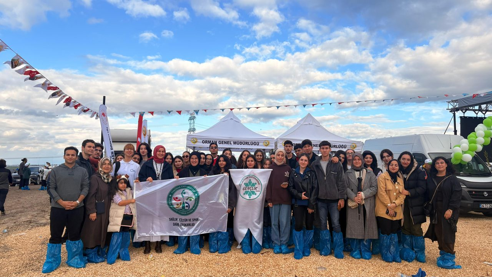
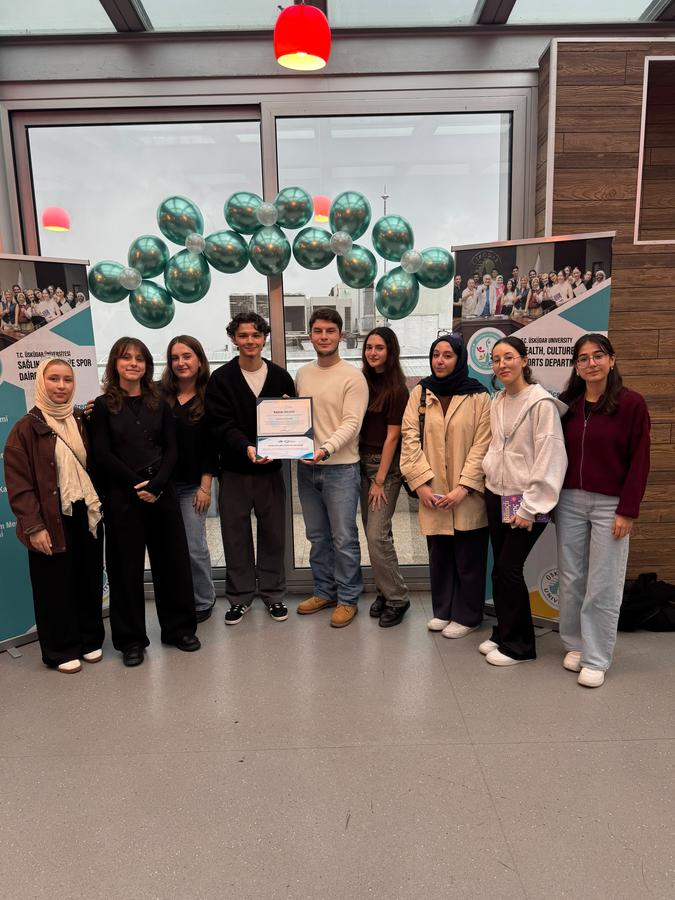

Üsküdar Üniversitesi Gençlik Kulübü
Sağlık, Kültür ve Spor (SKS) Daire Başkanlığı bünyesinde; akademikten spora, kültürden sanata tüm branşlarda 25.000 öğrenciyi kucaklayan, öğrenci dostu ve ücretsiz etkinliklerle kampüse enerji katan çatı topluluk.

Gençfest · Boğaz Buluşmaları · Gençlik Kupası
Sivil Toplumun Genç ve Dinamik Sesi
3.000+
Üniversitenin en büyük kulübü
15.000+
Sınıf temsilciliği & WhatsApp ağı
44 Kişi
Güncel yönetim ekibi & departmanlar
50.000 TL
GSB Gençlik Kupası proje desteği
Fikir ve Eylemin Birleştiği Yer
Üsküdar Üniversitesi Gençliği, öğrencilerin akademik ve sosyal hayatlarını zenginleştiren, onların kişisel gelişimlerine katkı sağlayan ve toplumsal değerlere duyarlı bireyler yetiştirmeyi hedefleyen dinamik bir topluluktur. Birlik ve dayanışmayı esas alır, her bireyin farklılıklarına saygı gösterir, kapsayıcı bir ortam yaratır.
Hayatın Her Alanında Lider Gençler
Vizyonumuz, öğrencilerimize sadece bilgi ve beceri kazandırmak değil, aynı zamanda onları hayatın her alanında lider olmaya hazırlamaktır. Bu amaçla, öğrencilerimizin kişisel yeteneklerini keşfetmelerine ve toplum yararına kullanmalarına imkan tanıyan bir platform sunuyoruz. Çeşitli etkinlikler ve projelerle öğrencilerimizin sosyal ağlarını genişletmelerine, yeni deneyimler edinmelerine ve yaşam boyu öğrenmenin değerini kavramalarına yardımcı oluyoruz.
Yetenekleri Keşfeden, Geleceğe Hazırlayan Ortam
Öğrencilerimizin her birinin benzersiz yeteneklerini keşfetmelerini ve bu yetenekleri toplum yararına kullanmalarını sağlayacak bir ortam yaratmayı hedefliyoruz. Çeşitli sosyal, kültürel ve eğitici etkinlikler düzenleyerek öğrencilerimizin yaşam kalitesini artırıyor, onları geleceğe hazırlıyor ve üniversite yıllarını unutulmaz kılıyoruz.
Temel Değerlerimiz
Yenilikçilik
Sürekli gelişimi ve yeniliği teşvik ederek, öğrencilerimizin çağın ötesinde düşünmelerini sağlıyoruz.
Dinamizm
Enerjik ve hareketli bir topluluk olarak, öğrencilerimizin aktif ve üretken olmalarını destekliyoruz.
Toplumsal Duyarlılık
Toplumsal sorunlara karşı duyarlı bireyler yetiştirerek, sosyal sorumluluk bilincini güçlendiriyoruz.
Kişisel Gelişim
Öğrencilerimizin kişisel yeteneklerini keşfetmelerine ve geliştirmelerine olanak tanıyoruz.
Kültürel Zenginlik
Farklı kültürlerden öğrencilerimizin bir araya gelerek, kültürel çeşitliliği kutluyoruz.
Akademik Başarı
Mükemmeliyetçi bir yaklaşımla, öğrencilerimizin akademik alanda en yüksek başarıları hedeflemelerini sağlıyoruz.
Sosyal Katılım
Öğrencilerimizin toplum içinde aktif roller alarak, liderlik ve takım çalışması becerilerini geliştirmelerine yardımcı oluyoruz.
Kuruluş Hikayesi
Başkanımız Faruk Dündar öncülüğünde; Girişimcilik Kültürü dersindeki fikir temelleri ve SKS istişareleriyle kurularak kısa sürede üniversitenin en büyük öğrenci topluluğuna dönüştü.
Öğrenci Dostu & Ücretsiz
Gençlik ve Spor Bakanlığı (ÜNİDES), belediyeler ve kaymakamlıklarla kurulan iş birlikleri sayesinde Boğaz turlarından festivallere etkinliklerin neredeyse tamamı öğrencilere ücretsiz sunulmaktadır.
Kulüplere Proje Mentörlüğü
Tek mesajla 15.000+ öğrenciye ulaşan duyuru ağı diğer kulüplerin etkinliklerine de açılıyor; Üsküdar Go gibi ÜNİDES projelerinde kardeş kulüplere aktif proje mentörlüğü sağlanıyor.
Tescillenmiş Başarı ve Hibe Geçmişi

2026–2027 Akademik Yılı En Başarılı Öğrenci Kulübü (1. Sıra)
SKS Öğrenci Kulüpleri Oryantasyon Programı kapsamında, dönem boyu yürüttüğü çalışmalarla dereceye giren kulüpler arasında 1. oldu. Ödül, Kurucu Rektör Prof. Dr. Nevzat Tarhan tarafından takdim edildi.
ÜHA Resmi Haberi Oku50.000 TL Ulusal Hibe Desteği — Gençlik Kupası
2024–2025 dönemi ÜNİDES programı kapsamında "Gençlik Kupası / Fakülteler Arası Voleybol Turnuvası" projesiyle Spor ve Sağlıklı Yaşam alanında 50.000 TL hibe almaya hak kazandı.
"100 Yazar 100 Yeni Eser" Koordinasyon Başarısı
İçişleri Bakanlığı desteği ve İstanbul Valiliği himayesindeki proje, Gençlik Kulübü koordinasyonunda 105 genç yazar ve 105 eserle tamamlandı.
Üsküdar Go Girişimcilik Zirvesi & Gölgeden Işığa Projesi
Sürdürülebilir Kalkınma Kulübü ile ortak yürütülen ÜNİDES destekli Üsküdar Go girişimcilik zirvesi ve İçişleri Bakanlığı destekli Gölgeden Işığa eğitim-kapanış programlarıyla ulusal projelerde öncü rol üstlendi.